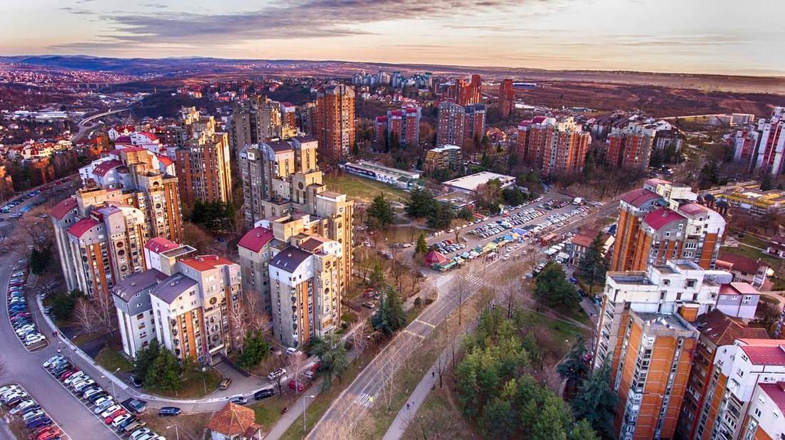
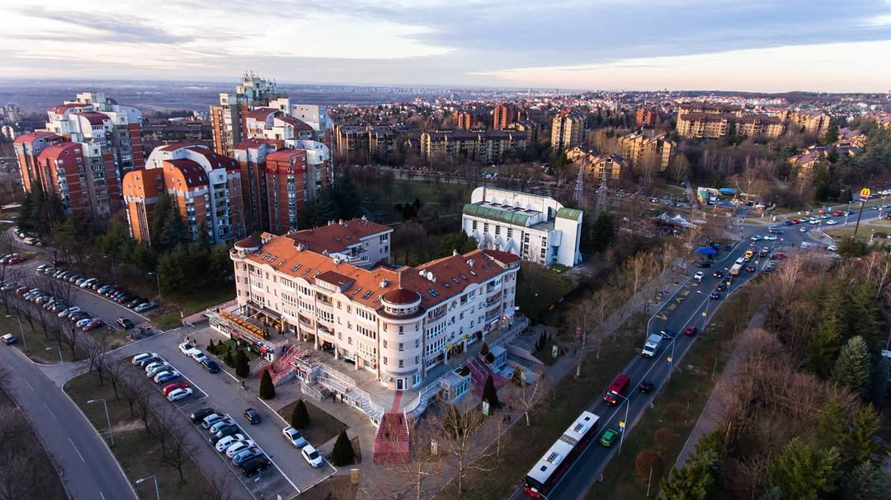
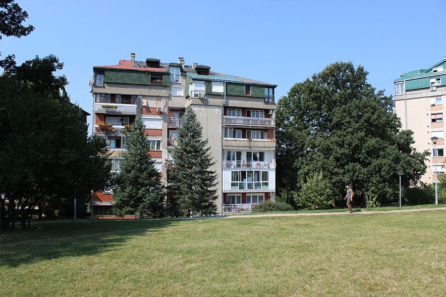

-A1 SELIDBE BEOGRAD-
SELIDBE RAKOVICA
SIGURNE I PROFESIONALNE SELIDBE RAKOVICA
Selidbe Rakovica predstavljaju uslugu koja zahteva dobru organizaciju, iskustvo u transportu i tim koji poznaje lokalne ulice, naselja i saobraćajne specifičnosti ovog dela Beograda. Ova opština obuhvata veliki broj stambenih zona, porodičnih kuća i poslovnih objekata, zbog čega je potreba za profesionalnim selidbama veoma izražena. Kada se planira preseljenje, važno je imati pouzdan tim koji može obezbediti bezbedan prevoz nameštaja, bele tehnike i svih ličnih stvari.
Naša A1 agencija za selidbe pruža usluge organizacije preseljenja za građane i firme koje žele brzo i sigurno preseljenje bez nepotrebnog stresa. Zahvaljujući iskustvu u radu na terenu, modernim transportnim vozilima i obučenim radnicima, moguće je organizovati selidbe Rakovica koje će biti efikasne i dobro planirane od početka do kraja.
Kada su u pitanju selidbe Rakovica, bilo da selite manji stan, porodičnu kuću ili preseljavate poslovni prostor, profesionalna organizacija preseljenja može značajno olakšati ceo proces. Pakovanje stvari, zaštita nameštaja, transport i raspored stvari na novoj adresi samo su neki od koraka koji zahtevaju pažnju i preciznost.
Dugogodišnje iskustvo u organizaciji selidbi u Beogradu omogućava da se preseljenje u Rakovici obavi brzo, sigurno i uz maksimalnu zaštitu stvari. Cilj profesionalnog angažovanja je da klijenti dobiju pouzdanu uslugu i da proces protekne bez komplikacija.

TIPOVI USLUGA SELIDBI U RAKOVICI
Selidba u Rakovici može biti jednostavna i efikasna kada ih organizuje iskusan tim koji poznaje složenost posla i potrebe klijenata. A1 firma za selidbe nudi različite vrste usluga koje su prilagođene različitim situacijama – od preseljenja stanova do transporta kompletnog kancelarijskog inventara. Kvalitetna organizacija podrazumeva planiranje prevoza, zaštitu nameštaja i pažljivo rukovanje svim predmetima tokom utovara i istovara.
Preseljenje stanova u Rakovici
Selidbe stanova predstavljaju najčešću vrstu preseljenja u Rakovici. Tokom procesa potrebno je obratiti pažnju na pravilno pakovanje stvari, posebno kada su u pitanju lomljivi predmeti, elektronska oprema ili osetljiv nameštaj. Profesionalni radnici koriste zaštitne folije, kartonske kutije i specijalne materijale kako bi svaka stvar bila adekvatno zaštićena tokom transporta.
Kad su u pitanju preseljenja stanova kod selidbe Rakovica često je potrebno organizovati demontažu i ponovnu montažu nameštaja, naročito kada su u pitanju ormari, kuhinjski elementi ili veći komadi nameštaja. Dobro planiran utovar omogućava da se prostor u prevoznom vozilu maksimalno iskoristi, što dodatno doprinosi sigurnosti transporta.
Usluge koje mi pružamo omogućavaju da selidba stana u Rakovici protekne bez komplikacija, uz organizovan prevoz i pažljivo rukovanje svim stvarima.
Selidbe kancelarija i poslovnih prostora u Rakovici
Selidba poslovnih prostora zahteva posebnu organizaciju, jer je cilj da se poslovanje firme što manje prekida. Tokom ovog tipa selidbe u Rakovici potrebno je transportovati kancelarijski nameštaj, računarsku opremu, dokumentaciju i druge poslovne materijale.
Profesionalna organizacija selidbe firmi i kancelarija podrazumeva planiranje svakog koraka – od pakovanja opreme do rasporeda stvari u novom prostoru. Posebna pažnja posvećuje se zaštiti računarske opreme i dokumentacije kako bi sve stiglo na novu adresu bez oštećenja.
Upravo zbog toga mnoge firme angažuju našu A1 agenciju za selidbe u Rakovici, jer mi posedujemo iskustvo u organizaciji poslovnih preseljenja i možemo obezbediti efikasan prevoz opreme, nameštaja i dokumentacije. Pošaljite nam upit putem kontakt forme, a mi ćemo vam odgovoriti u najkraćem roku.

Preseljenje kuća i porodičnih domaćinstava u Rakovici
Preseljenje kuća i većih domaćinstava zahtevaju detaljniju logistiku jer obično podrazumevaju veći broj stvari, veći nameštaj i dodatnu opremu. Selidba porodične kuće u Rakovici često uključuje transport nameštaja poput velikih ormara, garnitura, stolova, aparata bele tehnike i drugih predmeta koji zahtevaju posebnu pažnju tokom pakovanja i utovara.
Profesionalna organizacija selidbe Rakovica podrazumeva raspored stvari po kategorijama, pravilno pakovanje i planiranje transporta kako bi sve stvari bile sigurno prevezene na novu lokaciju. Kada se preseljenje organizuje uz pomoć iskusnog tima, moguće je značajno ubrzati ceo proces i smanjiti rizik od oštećenja stvari.
Često selidbe kuća u Rakovici uključuju i prevoz stvari u druge delove Beograda, zbog čega je važno imati logistiku koja omogućava efikasan i siguran transport.
KAKO IZGLEDA PROCES ORGANIZACIJE SELIDBE RAKOVICA
Organizacija selidbe Rakovica obuhvata nekoliko važnih koraka koji omogućavaju da preseljenje bude brzo, sigurno i dobro planirano. Kada se svaki korak pravilno organizuje, moguće je značajno smanjiti stres koji često prati preseljenje.
Planiranje preseljenja
Planiranje je prvi i jedan od najvažnijih koraka u procesu selidbe Rakovica, bez obzira da li je u pitanju veća ilimanja selidba. Tokom planiranja procenjuje se količina stvari koje je potrebno preneti na novu lokaciju, određuje se veličina transportnog vozila i planira broj radnika koji će učestvovati u preseljenju.
Dobro planiranje omogućava da se preseljenje organizuje u najkraćem mogućem roku, uz optimalan raspored vremena i resursa. Takođe se određuje ruta prevoza i procenjuje vreme potrebno za utovar i istovar stvari.
Iskustvo koje mi imamo omogućava da se svaka selidba Rakovica unapred organizuje na način koji smanjuje rizik od komplikacija i omogućava efikasno preseljenje.

Pakovanje i zaštita stvari
Pakovanje stvari je jedan od najvažnijih segmenata tokom selidbe Rakovica, jer direktno utiče na bezbednost. Nameštaj se štiti zaštitnim folijama, dok se manji predmeti pakuju u čvrste kartonske kutije koje sprečavaju pomeranje tokom transporta.
Posebna pažnja posvećuje se lomljivim predmetima kao što su staklo, ogledala ili elektronska oprema. Ovi predmeti se dodatno oblažu zaštitnim materijalima kako bi se sprečila eventualna oštećenja tokom prevoza. Pravilno pakovanje omogućava da se stvari bezbedno rasporede u tovarnom prostoru i da se maksimalno iskoristi prostor bez rizika od pomeranja tokom vožnje.
Transport i istovar
Nakon utovara stvari u transportno vozilo, sledi faza prevoza do nove lokacije za šta mi najčešće koristimo:
Tokom vožnje važno je obezbediti stabilnost tereta kako bi se sprečila oštećenja nameštaja i drugih predmeta.
Po dolasku na novu adresu, radnici pažljivo istovaraju stvari i raspoređuju ih prema dogovoru sa klijentom. Ukoliko je potrebno, može se izvršiti i montaža nameštaja ili raspored većih komada u prostoru. Profesionalna organizacija prevoza omogućava da se selidba Rakovica završi brzo i efikasno, uz minimalan napor za klijenta.
Naselja u opštini Rakovica gde vršimo selidbe
Svakako da selidbe Rakovica organizujemo u svim delovima opštine. Zahvaljujući dobrom poznavanju lokalnih ulica i naselja posao obavljamo brzo i efikasno
Naselja u opštini Rakovica su:
- Avala grad
- Kanarevo brdo
- Petlovo brdo
- Miljakovac
- Vidikovac
- Labudovo brdo
- Kneževac
- Kijevo
- Košutnjak
- Resnik
- Rakovica selo
U ovim naseljima organizujemo svakodnevna preseljenja, bilo da je u pitanju unutar Rakovice ili prevoz stvari u druge delove Beograda.
Cena selidbe Rakovica – faktori koji utiču na cenu
Cena selidbe u Rakovici može zavisiti od više faktora koji utiču na organizaciju transporta i prenosa stvari. Najvažniji faktori su količina stvari, udaljenost između lokacija, spratnost objekta i potreba za dodatnim uslugama kao što su pakovanje ili demontaža nameštaja.
Sigurno da preseljenje manjeg stana obično zahteva manje vremena i manji broj radnika, dok preseljenje kuće ili poslovnog prostora može zahtevati složeniju logistiku i veći transportni kapacitet, samim tim se menja i cena selidbe.
Zbog toga je preporučljivo da se pre selidbe Rakovica izvrši procena kako bi klijenti dobili tačnu informaciju o organizaciji i ceni preseljenja.
Pouzdane selidbe Rakovica uz stručan tim
Ako planirate preseljenje u opštini Rakovica ili u drugi deo Beograda, profesionalna organizacija može vam značajno olakšati ceo proces. Iskusan tim može obezbediti siguran transport stvari, pravilno pakovanje i efikasnu realizaciju preseljenja.
Uz pouzdanu organizaciju i iskustvo koje poseduje A1 Selidbe Beograd, preseljenje može biti jednostavan i dobro organizovan proces koji omogućava brz početak života ili poslovanja na novoj lokaciji.